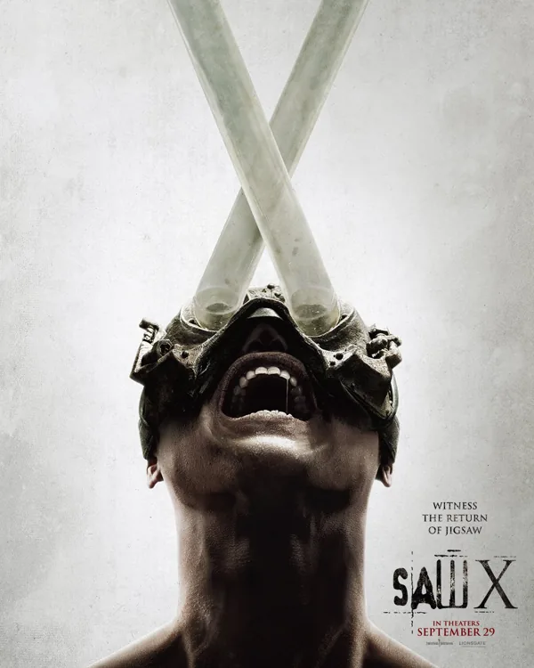

Sobre
Jogos Mortais X
Gênero: Terror/Crime
Direção: Kevin Greutert
Escrito por: Josh Stolberg, Pete Goldfinger
Duração: 1h 58min
Elenco: Tobin Bell (Jigsaw), Shawnee Smith (Amanda Young), Synnove Macody Lund (Dra. Cecilia Pederson), Steven Brand (Parker Sears)
Classificação

Sinopse
John Kramer, o homem conhecido como Jigsaw, está morrendo de câncer terminal. Ele está determinado a deixar um legado que ensine as pessoas a valorizar a vida. Jigsaw recruta um grupo de pessoas que ele acredita que precisam ser mudadas. Ele as coloca em uma série de jogos mortais, onde elas devem superar suas fraquezas para sobreviver.